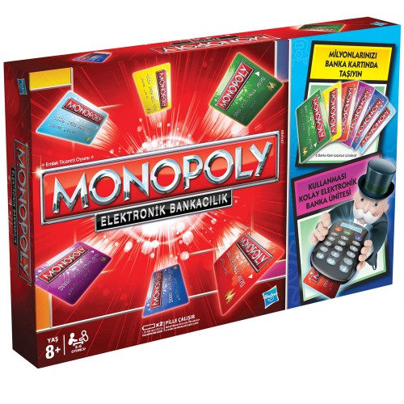

OYUN KURALLARI!
Nasıl kazanırım?
Oyun alanı üzerinde dolaşarak mümkün olduğunca çok mülk (arsa,
istasyon ve iskele, kamu kuruluşu) satın alın. Ne kadar çok mülkünüz
olursa o kadar çok kira geliriniz olur. Gelirlerinizi elektronik banka
ünitesinde saklayın. İflas etmeden oyunda kalan son oyuncu oyunu
kazanır!
Oyuna ilk kim başlar?
Sırayla tüm oyuncular iki beyaz zarı birlikte atar.
En yüksek zarı atan oyuncu oyuna başlar.
-
Sıra size gelince
İki beyaz zarı birlikte atın
-
Piyonunuzu attığınız zar kadar saat yönünde ilerletin
-
Piyonunuzun durduğu haneye göre yapmanız gerekenleri öğrenmek
için 6. sayfadaki “OYUN ALANINDAKİ HANELER” bölümüne bakın.
-
Nasıl ödeme yapıp para alacağınızı öğrenmek için 4. sayfadaki
“BANKA ÜNİTESİ” bölümüne bakın.
-
Çift zar atarsanız (4–4, 6–6, vb…) yapmanız gerekenleri
tamamladıktan sonra tekrar zar atın ve oyuna devam edin
Dikkat! Eğer aynı turda üç kez çift zar atarsanız, üçüncüsünde
Kodes’e girersiniz.
-
Sıranız sona erdi. Sıra solunuzdaki oyuncuda...
Bankacı için Notlar
-
Kartları banka ünitesine daima üzerlerindeki okların yönünde yerleştirin.
-
Bir kartı banka ünitesine yerleştirdiğinizde bip sesini duymazsanız kartı doğru yerleştirip yerleştirmediğinizi kontrol edin.
Bip sesi eğer sesi tamamen kapattıysanız da duyulmayabilir.
-
Banka ünitesiyle 30 saniye işlem yapılmazsa ünite kendi kendine kapanır. Açmak için herhangi bir tuşa basın ya da
üniteye bir kart yerleştirin.
-
Bir seferde girebileceğiniz en yüksek tutar A20m, en düşük tutar ise A10k’dır
-
Eğer tutarı girdikten sonra K veya M tuşlarından birine basmazsanız işlem yapılmaz.
-
Yanlış bir tutar girip kartı banka ünitesinden çıkardıysanız, kartı tekrar üniteye yerleştirip doğru tutara ulaşmak için tekrar
işlem yapmanız gerekir.
-
Yeni bir oyuna başlamadan önce eğer varsa banka ünitesindeki kartı çıkarın. C tuşuna basın ve bip sesini duyana
kadar parmağınızı basılı tutun. Tüm kartlar oyunun başındaki gibi A15m yüklü olacaktır.
-
Banka ünitesiyle ilgili daha detaylı bilgi için 10. sayfaya bakın.